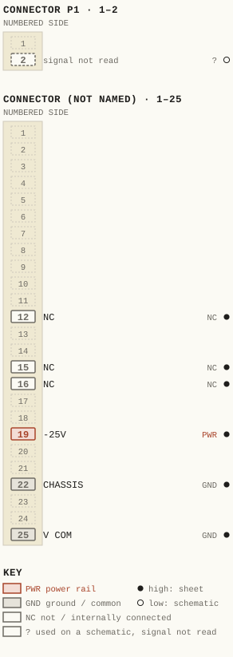
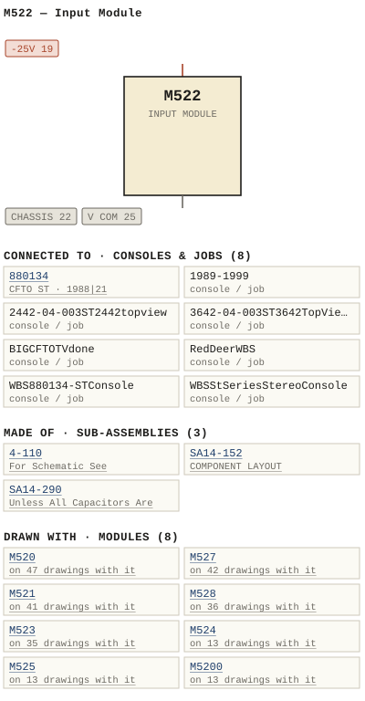

M522 — Input Module
| Type | module |
| Category | FILTERS |
| Try it | simulator & front panel · download package (zip) |
| Earliest dated evidence | 1985|18 — named in document |
| Evidence | named in 1985 - M471C - Stereo Input Module.pdf |
| Confidence | low (named by) |
| All years found | 1985|18, 1988|21, 1995|28, 2005|38 |
| Used in jobs | 880134 (1988|21), 1989-1999, 2442-04-003ST2442topview, 3642-04-003ST3642TopViewLayout, BIGCFTOTVdone, RedDeerWBS, WBS880134-STConsole, WBSStSeriesStereoConsole |
| Variants | M522B, M522C |
| Folder | DOCUMENTS/Manuals + tech DOCUMENTS/Consoles |
| Folder | DOCUMENTS/WBSPS - To Be edited/WBS St Series Stereo Console |
| Folder | DOCUMENTS/wbsPS-NOT UPLOADED/WBSPS PAge |
Connections
What it is made of and what it is part of.
Pictures


M522.pinout.svg

M522.connections.svg 1986 - DOC - What a manual inside looks like.jpg
1986 - DOC - What a manual inside looks like.jpg 19xx - M5200 - AD - WBSPS - AD - LS series 003.jpg
19xx - M5200 - AD - WBSPS - AD - LS series 003.jpg 19xx - DOC - 3642-04-003 - ADERS STEREO MASTER FADERS MONO INPUT FADERS.jpg
19xx - DOC - 3642-04-003 - ADERS STEREO MASTER FADERS MONO INPUT FADERS.jpg 19xx - DOC - 004.jpg
19xx - DOC - 004.jpg 19xx - DOC - 007.jpg
19xx - DOC - 007.jpg 19xx - DOC - 011.jpg
19xx - DOC - 011.jpg 19xx - DOC - 018.jpg
19xx - DOC - 018.jpg 19xx - DOC - 023.jpg
19xx - DOC - 023.jpg 19xx - DOC - 522-04-001 - FRONT PANEL LAYOU.jpg
19xx - DOC - 522-04-001 - FRONT PANEL LAYOU.jpg 19xx - 522-01-001 - EQUALIZER MODULE FUNCTIONAL - ISS 1.jpg
19xx - 522-01-001 - EQUALIZER MODULE FUNCTIONAL - ISS 1.jpg 19xx - 522-01-002 - EQUALIZER MODULE FUNCTIONAL - ISS 1.jpg
19xx - 522-01-002 - EQUALIZER MODULE FUNCTIONAL - ISS 1.jpg 19xx - 522-02-001 - EQUALIZER MODULE SCHEMATIC - ISS 3.jpg
19xx - 522-02-001 - EQUALIZER MODULE SCHEMATIC - ISS 3.jpg 19xx - 522-02-002 - EQUALIZER MODULE SCHEMATIC - ISS 3.jpg
19xx - 522-02-002 - EQUALIZER MODULE SCHEMATIC - ISS 3.jpg 19xx - 522-02-003 - MONO EQUALIZER MODULE SCHEMATIC - ISS 1.jpg
19xx - 522-02-003 - MONO EQUALIZER MODULE SCHEMATIC - ISS 1.jpg 19xx - M522 - #EQ #Photos-l1600-1.jpg
19xx - M522 - #EQ #Photos-l1600-1.jpg 19xx - M522 - #EQ #Photos-l1600-2.jpg
19xx - M522 - #EQ #Photos-l1600-2.jpg 19xx - M522 - #EQ #Photos-l1600-3.jpg
19xx - M522 - #EQ #Photos-l1600-3.jpg 19xx - M522 - #EQ #Photos-l1600-4.jpg
19xx - M522 - #EQ #Photos-l1600-4.jpg 19xx - M522 - #EQ #Photos-l1600-5.jpg
19xx - M522 - #EQ #Photos-l1600-5.jpg 19xx - M522 - #EQ #Photos-l1600-6.jpg
19xx - M522 - #EQ #Photos-l1600-6.jpg 19xx - M522 - #EQ #Photos-l1600-7.jpg
19xx - M522 - #EQ #Photos-l1600-7.jpg 19xx - M522 - #EQ #Photos-l1600.jpg
19xx - M522 - #EQ #Photos-l1600.jpg 19xx - M522 - 522-01-001 - EQUALIZER MODULE FUNCTIONAL.jpg
19xx - M522 - 522-01-001 - EQUALIZER MODULE FUNCTIONAL.jpg 19xx - M522 - 522-01-001.jpg
19xx - M522 - 522-01-001.jpg 19xx - M522 - 522-01-002 - EQUALIZER MODULE FUNC TIONAL.jpg
19xx - M522 - 522-01-002 - EQUALIZER MODULE FUNC TIONAL.jpg 19xx - M522 - 522-01-002.jpg
19xx - M522 - 522-01-002.jpg 19xx - M522 - 522-02-001 - UNLESS OTHERWISE SPECIFIED COM LAST COMPONENT DESIGNAT IONS.jpg
19xx - M522 - 522-02-001 - UNLESS OTHERWISE SPECIFIED COM LAST COMPONENT DESIGNAT IONS.jpg 19xx - M522 - 522-02-001 - WUKS ALL CAPACITORS ARE.jpg
19xx - M522 - 522-02-001 - WUKS ALL CAPACITORS ARE.jpg 19xx - M522 - 522-02-002 - ALL CAPACITORS ARE UNLESS OTHERWISE SPEC.jpg
19xx - M522 - 522-02-002 - ALL CAPACITORS ARE UNLESS OTHERWISE SPEC.jpg 19xx - M522 - 522-02-002 - UNLESS OTHERWISE SPEC IFIED LAST COMPONENT DESIGNATIONS.jpg
19xx - M522 - 522-02-002 - UNLESS OTHERWISE SPEC IFIED LAST COMPONENT DESIGNATIONS.jpg 19xx - M522 - 522-04-001 - EQUALIZER MODULES MODULE LAYOUT.jpg
19xx - M522 - 522-04-001 - EQUALIZER MODULES MODULE LAYOUT.jpg 19xx - M522 - 522-04-001 - NQTE NOT SUPPL IED.jpg
19xx - M522 - 522-04-001 - NQTE NOT SUPPL IED.jpg 19xx - M522 - 522-06-001 - EQUALIZER MODULE COMPONENT LAYOUT.jpg
19xx - M522 - 522-06-001 - EQUALIZER MODULE COMPONENT LAYOUT.jpg 19xx - M522 - 522-06-002 - EQUALIZER MODULE COMPONENT LAYOUT.jpg
19xx - M522 - 522-06-002 - EQUALIZER MODULE COMPONENT LAYOUT.jpg 19xx - M522 - 522A - P001 - Title Page.jpg
19xx - M522 - 522A - P001 - Title Page.jpg 19xx - M522 - 522A - P002.jpg
19xx - M522 - 522A - P002.jpg 19xx - M522 - 522A - P003 - 1-1.jpg
19xx - M522 - 522A - P003 - 1-1.jpg 19xx - M522 - 522A - P004 - 2-1.jpg
19xx - M522 - 522A - P004 - 2-1.jpg 19xx - M522 - 522A - P005 - 3-1.jpg
19xx - M522 - 522A - P005 - 3-1.jpg 19xx - M522 - 522A - P006 - 3-2.jpg
19xx - M522 - 522A - P006 - 3-2.jpg 19xx - M522 - 522A - P007 - 4-1.jpg
19xx - M522 - 522A - P007 - 4-1.jpg 19xx - M522 - 522A - P008 - 4-2.jpg
19xx - M522 - 522A - P008 - 4-2.jpg 19xx - M522 - 522A - P009 - 5-1.jpg
19xx - M522 - 522A - P009 - 5-1.jpg 19xx - M522 - 522A - P010 - 5-2.jpg
19xx - M522 - 522A - P010 - 5-2.jpg 19xx - M522 - 522A - P011 - 5-3.jpg
19xx - M522 - 522A - P011 - 5-3.jpg 19xx - M522 - 522A - P012 - 6-1.jpg
19xx - M522 - 522A - P012 - 6-1.jpg 19xx - M522 - 522A - P013 - 6-2.jpg
19xx - M522 - 522A - P013 - 6-2.jpg 19xx - M522 - 522A - P014 - 6-3.jpg
19xx - M522 - 522A - P014 - 6-3.jpg 19xx - M522 - 522A - P015 - 6-4.jpg
19xx - M522 - 522A - P015 - 6-4.jpg 19xx - M522 - 522A - P016 - 6-5.jpg
19xx - M522 - 522A - P016 - 6-5.jpg 19xx - M522 - 522A - P017 - 6-6.jpg
19xx - M522 - 522A - P017 - 6-6.jpg 19xx - M522 - 522A - P018 - 6-7.jpg
19xx - M522 - 522A - P018 - 6-7.jpg 19xx - M522 - 522A - P019 - 6-8.jpg
19xx - M522 - 522A - P019 - 6-8.jpg 19xx - M522 - 522A - P020 - 6-9.jpg
19xx - M522 - 522A - P020 - 6-9.jpg 19xx - M522 - 522A - P021 - 6-10.jpg
19xx - M522 - 522A - P021 - 6-10.jpg 19xx - M522 - 522A - P022 - 7-1.jpg
19xx - M522 - 522A - P022 - 7-1.jpg 19xx - M522 - A B - P01.jpg
19xx - M522 - A B - P01.jpg 19xx - M522 - A B - P02.jpg
19xx - M522 - A B - P02.jpg 19xx - M522 - A B - P03.jpg
19xx - M522 - A B - P03.jpg 19xx - M522 - A B - P04.jpg
19xx - M522 - A B - P04.jpg 19xx - M522 - A B - P05.jpg
19xx - M522 - A B - P05.jpg 19xx - M522 - A B - P06.jpg
19xx - M522 - A B - P06.jpg 19xx - M522 - A B - P07.jpg
19xx - M522 - A B - P07.jpg 19xx - M522 - A B - P08.jpg
19xx - M522 - A B - P08.jpg 19xx - M522 - A B - P09.jpg
19xx - M522 - A B - P09.jpg 19xx - M522 - A B - P10.jpg
19xx - M522 - A B - P10.jpg 19xx - M522 - A B - P11.jpg
19xx - M522 - A B - P11.jpg 19xx - M522 - A B - P12.jpg
19xx - M522 - A B - P12.jpg 19xx - M522 - A B - P13.jpg
19xx - M522 - A B - P13.jpg 19xx - M522 - A B - P14 - Pinouts.jpg
19xx - M522 - A B - P14 - Pinouts.jpg 19xx - M522 - A B - P15.jpg
19xx - M522 - A B - P15.jpg 19xx - M522 - A B - P16.jpg
19xx - M522 - A B - P16.jpg 19xx - M522 - A B - P17.jpg
19xx - M522 - A B - P17.jpg 19xx - M522 - A B - P18.jpg
19xx - M522 - A B - P18.jpg 19xx - M522 - A B - P19 - Filter Schematic.jpg
19xx - M522 - A B - P19 - Filter Schematic.jpg 19xx - M522 - A B - P20 - EQ Schematic.jpg
19xx - M522 - A B - P20 - EQ Schematic.jpg 19xx - M522 - A B - P21 - Filter Component Layout.jpg
19xx - M522 - A B - P21 - Filter Component Layout.jpg 19xx - M522 - A B - P22 - Component Layout.jpg
19xx - M522 - A B - P22 - Component Layout.jpg 19xx - M522 - Equalizer 2.jpg
19xx - M522 - Equalizer 2.jpg 19xx - M522 - Equalizer 2_small.jpg
19xx - M522 - Equalizer 2_small.jpg 19xx - M522 - Equalizer.jpg
19xx - M522 - Equalizer.jpg 19xx - M522 - Equalizer_small.jpg
19xx - M522 - Equalizer_small.jpg 19xx - M522 - IMG_3486.jpg
19xx - M522 - IMG_3486.jpg 19xx - M522 - IMG_3490.jpg
19xx - M522 - IMG_3490.jpg 19xx - M522 - IMG_3493.jpg
19xx - M522 - IMG_3493.jpg 19xx - M522 - IMG_3497.jpg
19xx - M522 - IMG_3497.jpg 19xx - M522 - IMG_3499.jpg
19xx - M522 - IMG_3499.jpg 19xx - M522 - Input Module 2.jpg
19xx - M522 - Input Module 2.jpg 19xx - M522 - Input Module 3.jpg
19xx - M522 - Input Module 3.jpg 19xx - M522 - Input Module 3_small.jpg
19xx - M522 - Input Module 3_small.jpg 19xx - M522 - Input Module.jpg
19xx - M522 - Input Module.jpg 19xx - M522 - Input Module_small.jpg
19xx - M522 - Input Module_small.jpg 19xx - M522 - wbsps - module - m522 input module 2_small.jpg
19xx - M522 - wbsps - module - m522 input module 2_small.jpg 1988 - 880134 - 2442-01-001 - STEREQ STEREO SWITCHER SWITCHER EXTERNAL LINE TALLY.jpg
1988 - 880134 - 2442-01-001 - STEREQ STEREO SWITCHER SWITCHER EXTERNAL LINE TALLY.jpg 1989 - 1989-1999 - IMG_6598.jpg
1989 - 1989-1999 - IMG_6598.jpg 1984 - ST2442 - 2442b.jpg
1984 - ST2442 - 2442b.jpg 1984 - ST3642 - 3642b.jpg
1984 - ST3642 - 3642b.jpg 1988 - ST - 005.jpg
1988 - ST - 005.jpg 1985 - ST - 522-04-002 - FRONT PANEL LAYOUT.jpg
1985 - ST - 522-04-002 - FRONT PANEL LAYOUT.jpg 19xx - DOC - STEREO L SERIES - P004.jpg
19xx - DOC - STEREO L SERIES - P004.jpg 1974 - M462 - convert M522.jpg
1974 - M462 - convert M522.jpg 1979 - M471C - 12 - 4-1.jpg
1979 - M471C - 12 - 4-1.jpg 1982 - M521A - p13.jpg
1982 - M521A - p13.jpg 1982 - M521A - p7.jpg
1982 - M521A - p7.jpg 1985 - M521 - 007.jpg
1985 - M521 - 007.jpg 1985 - M521 - 010.jpg
1985 - M521 - 010.jpg 1988 - M520A - M520A_Page_13.jpg
1988 - M520A - M520A_Page_13.jpgPrice history
| Year | Kind | Price | Listed as | Effective | Source |
|---|---|---|---|---|---|
| 2005|38 | used market value | 75.00 | M522 - Equalizer | wbsps - website ARCHIVE/WBSPS 2008/ARCHIVE/old website/PriceGuide.htm | |
| 2005|38 | used market value | 150.00 | M522 Input | wbsps - website ARCHIVE/WBSPS 2008/ARCHIVE/old website/PriceGuide.htm | |
| 2006|39 | used market value | 75.00 | M522 - Equalizer | wbsps - website ARCHIVE/WBSPS 2008/ARCHIVE/jan 2006 shell/priceguide.htm | |
| 2006|39 | used market value | 150.00 | M522 Input | wbsps - website ARCHIVE/WBSPS 2008/ARCHIVE/jan 2006 shell/priceguide.htm |
Pinout & connections
Each contact as its own documents name it: 6 named (6 high confidence). An empty slot is a contact no page names. Hover a contact for its source; the table under the drawing lists them.
pinout (SVG) · connections (SVG) · pins (JSON)
Pin evidence — 7 contacts
| Pin | Signal | Kind | Confidence | Read from | Source |
|---|---|---|---|---|---|
| 12 | NC | not / internally connected | high | table | 19xx - M522 - 522A - Equalizer (2).pdf, p. 22 |
| 15 | NC | not / internally connected | high | table | 19xx - M522 - 522A - Equalizer (2).pdf, p. 22 |
| 16 | NC | not / internally connected | high | table | 19xx - M522 - 522A - Equalizer (2).pdf, p. 22 |
| 19 | -25V | power rail | high | table | 19xx - M522 - 522A - Equalizer (2).pdf, p. 22 |
| 22 | CHASSIS also: +/-25 VOL SUPPLY VOLT… (prose); AT PINS MOCULE CONNEC… (prose) | ground / common | high | table | 19xx - M522 - 522A - Equalizer (2).pdf, p. 22 |
| 25 | V COM | ground / common | high | table | 19xx - M522 - 522A - Equalizer (2).pdf, p. 22 |
| P1-2 | — | used on a schematic, signal not read | low | schematic | 19xx - M522 - A B - P15.jpg, p. 1 “The Mter input is applied P1-2” |
Dates found in the documents
| Year | Kind | Text | File |
|---|---|---|---|
| 1986|19 | manual issue date | MANUAL ISSUE #3 JANUARY 1986 |
1986 - DOC - What a manual inside looks like.jpg |
| 1986|19 | manual issue date | MANUAL ISSUE #3 JANUARY 1986 |
1986 - M522 - DOC - What a manual inside looks like.jpg |

Physical manual inventory
| Item | Location | Status | Scanned |
|---|---|---|---|
| M522-522A - Equalizer | DUPLICATE | SCANNED BUT NEEDS STICHING | |
| M522 + 522A - Equalizer | Recently scanned and stiched by WB | ||
| M522-522A - Equalizer | PDF - Already scanned | ||
| M522B/M522C, EQUALIZER MODULES | LOOSE BOX |
Ads & brochures
- 19xx - M5200 - AD - WBSPS - AD - LS series 003.jpg
- 19xx - M5201 - AD - WBSPS - AD - LS series 003.jpg
- 19xx - M524 - AD - WBSPS - AD - LS series 003.jpg
- 19xx - M526 - AD - WBSPS - AD - LS series 003.jpg
- 19xx - M522 - AD - WBSPS - AD - LS series 003.jpg
- 19xx - M520 - AD - WBSPS - AD - LS series 003.jpg
- 19xx - M521 - AD - WBSPS - AD - LS series 003.jpg
- 19xx - M525 - AD - WBSPS - AD - LS series 003.jpg
- 19xx - M523 - AD - WBSPS - AD - LS series 003.jpg
- 19xx - M527 - AD - WBSPS - AD - LS series 003.jpg
- 19xx - M528 - AD - WBSPS - AD - LS series 003.jpg


Documents (2)
| Year | File | |
|---|---|---|
| ? | 19xx - M522 - 522A - Equalizer (2).pdf | note |
| ? | 19xx - M522 - 522A - Equalizer.pdf | note |
Photos & scans (122)


Sub-assemblies & parts used (3)
| Item | What | Family | Year | How we know |
|---|---|---|---|---|
| 4-110 | For Schematic See | Sub-assemblies (n-nnn) | 1974|7 | named in its manual |
| SA14-152 | COMPONENT LAYOUT | Circuit boards (SA14-nnn) | named in its manual | |
| SA14-290 | Unless All Capacitors Are | Circuit boards (SA14-nnn) | named in its manual |
Parts list — board M522 (45 parts)
From 19xx - M522 - A B - P16.jpg, page 1 (scanned); also in timelines/data/bom.csv.
| Ref | Part | Value | Manufacturer | Mfr part no. |
|---|---|---|---|---|
| C7 | uf/1CC Spraque TCICXZRIOLMOSOB | |||
| C12 | uf/10 Kemet | T3903475MC1CAS | ||
| C14 | uf/100 sprague | 0.1 | 1C1OXZRIO4MOE08 | |
| C15 | uF/10 Kemet | T3CCEL7SMO1OAS | ||
| C17 | pF Aselco | 3900 | ca9z-MC-100-392m | |
| C18 | C . 1 uF/100 Sprague | IC IOC7RTO4MC5OR | ||
| C19 | UF/10 Kemet | 4. 7 | 13908275M010AS | |
| C20 | pF Philips | 100 | 2222-638-52101 | |
| C21 | pF Aselco | 3900 | co92-MC-1C0-j9zM | |
| C22 | LF/10o Sprague | 0 .1 | ICIOXZRIO4MOSOB | |
| C23 | uF/35 Kemet | TZJ0B|05M035A5 | ||
| C2L | PF Philips 2222-638 | 100 | 58101 | |
| C25 | uF/100 Sprague | 1CIOX7RICLMOSOB | ||
| C26 | 56C pF Philips | 2222-630-03561 | ||
| C27 | 1OC0 pF Aselco | ca92-MC-I0o-I0zM | ||
| C2E | LF/10c Sprague ICIOXZRIOAMOSOB | 0.1 | ||
| C2S | uf Aselco | 0.068 | c092-MC-100-BCzM | |
| C31 | uF/25 Kemet | 10 | T3I0C | O6MO25AS | |
| C32 | uF/100 Sprague | ICIOXZRIO4MOSOR | ||
| C34 | uF/ 25 Kemct | T39CC|O6MOZ5AS | ||
| M522 | MONO EQUALIZER_MODULE | |||
| R20 | Resistor 1/4w 59 Philips | |||
| R23 | Potentiometer Sk Clarostat WBS | 10-060 | ||
| R24 | delete | |||
| R25 | Resistor 1/4w 1SK Philips | 57 | ||
| R27 | Poten tiometer Clarostat WBS | 50K | 10-054 | |
| R28 | delete | |||
| R29 | Resistor 1/4w 5% Philips | 15K | ||
| R34 | Potentiometer Clarostat WBS | 5k | 10-060 | |
| R35 | delete | |||
| R36 | Resistor 1/4w 59 Philips | 15k | ||
| R43 | Potentiometer Sk Clarostat WBS | 10-052 | ||
| R4B | delete | |||
| R45 | Resistor 1/4w 5% IK Philips | |||
| T0 | delete | |||
| R83 | Resistor 1/2w 5% Philips | 10K | ||
| M522A | STEREO EQUAL IZER MODULE | |||
| R6 | Resistor 1/4w5% Philips | 15k | ||
| R16 | Potentiometer Clarostat WBS | 50k | 10-057 | |
| R19 | Resistor 1/4w 5% Philips | |||
| R71 | Resistor 1/4w 5%0 Philips | 15k | ||
| R17 | Cap Red) | 040-1635 | ||
| R2A | Cap (Green | 040-3665 | ||
| SW1 | Cap (Grey FM-GRY | |||
| SW2 | (Red) FG-RED |
Consoles & jobs it is connected to (8)
Their own drawings name this module.
| Job | Year | Drawing | Page |
|---|---|---|---|
| 880134 | 1988|21 | 1988 - 880134 - 2442-01-001 - STEREQ STEREO SWITCHER SWITCHER EXTERNAL LINE TALLY.jpg | 1 |
| 1989-1999 | 1989 - 1989-1999 - IMG_6598.jpg | 1 | |
| 2442-04-003ST2442topview | 1984 - ST2442 - 2442b.jpg | 1 | |
| 3642-04-003ST3642TopViewLayout | 1984 - ST3642 - 3642b.jpg | 1 | |
| BIGCFTOTVdone | 1988 - BIG CFTO TV done - 2442-01-001 - STEREQ STEREO SWITCHER SWITCHER EXTERNAL LINE TALLY.jpg | 1 | |
| RedDeerWBS | 1985 - Red Deer WBS - IMG_6598.jpg | 1 | |
| WBS880134-STConsole | 1988 - ST - 005.jpg | 1 | |
| WBSStSeriesStereoConsole | 1985 - ST - 522-04-002 - FRONT PANEL LAYOUT.jpg | 1 |


Named in other drawings & documents (17)

From the manuals
Each manual split into its sections. Text that is the same in many Ward-Beck manuals (warranty, address, standard notes) is kept once on the Boilerplate page and linked.
General description (2)
Description — 200 words · 19xx - M522 - A B - P15.jpg, page 1
5414-152/5414-1524 FILTER ASSEMBL JES The leif: channel section wil be described_ The rignl channe cperates an icentica manner and the mono channe makes ue tne left channe circuitry ony Mic Tre quency Stale Varianle Filter The Mid-Frequency state variable Tilter compriscs an inverting bufier amplitier UIA combining amplifier UIB arid Two low Pa;s ters made 4D U2A, U28 C6.C10 and the externa frequency controi R6 Tnc externl ectcr switch Sw2 affects the overal end [hereny contrclling V5 filter g2in The Mter input is applied P1-2 PI-1 and the Filter output appears The Mid-Frequency #2 stale variable filter made uD their asscialed components C17, Cz1 anc externa Cetermine the center resonant) frequency this filter 03, Ua and control High Frequency High Pass Filter USA buffers the high pass filter networt< from the external cut/poost, contro C26 C27 , R28 and external frequency contro RSA determine the corner requency the high pass ter USB butfers the ter frequency ceterminins components from the summing amplifier U3B the main equa zer assembly Low Frequency Low Pass Filter The low frequency sheiving network comprises external frequency control R5 R3O , C29 and C30 Buffer u6 isolates [he frequency determining components from the equalizers summing amplifier
- source: 19xx - M522 - A B - P15.jpg, p. 1
Description — 15 words · 19xx - M522 - 522A - P006 - 3-2.jpg, page 1
M522/M522A EQUAL IZER MODULES INSERT INDICATOR DSI iuminates when the Insert Switch SW2 selected 3-2
- source: 19xx - M522 - 522A - P006 - 3-2.jpg, p. 1
Specifications (1)
Technical Data — 179 words · 19xx - M522 - 522A - P003 - 1-1.jpg, page 1
M522/M522A EQUALIZER MODULES Note Specifications are based voltage levels 600 ohm system unless otherwise specified Gain: Unity +/-0 .25 dB_ Frequency Response +/-0.5 dB from Hz kHz with the equalizer inserted and cut/boost controls the detent positon Noise: dBm absolute (20 Hz cut/boost controls the kHz / equalizer detent position Harmonic Distortion: Less than from 20 Hz kHz +20 dBm output level less .
Less than 0.01% at kHz +20 dBm output level _ Source Impedance: Less than ohms unbalanced Input Impedance Greater than 4K ohms unbalanced_ Input Level 6dBm nominal +20 dBm maximum Output Impedance: Less than ohms unbalanced Lcad Impedance: SK ohms greater Output Level dBm nominal +22 dBm maximum. Channel Separation: Phasing: Greater than dB Input and output are phase with the equa izing controls the detent position Equalization Tracking: Within 0.5 dB _ Power Requirements: +/-25 volts dc (M522 40 ma) , (M522A 65 ma) Ambient Temperature: 60 degrees Celsius Dimensions: 60" wide 7.00" high 50" deep (41 mm 178 mm 165 mm ) Weight: M522 M522A (0.485 kg) net .
(0.565 kg_ net_ 1-1
- source: 19xx - M522 - 522A - P003 - 1-1.jpg, p. 1
Drawings (24)
Each scan with its trace laid over it: the slider runs from the scan to the vector drawing. Click one to see it large and save it as SVG, DXF, KiCad, PDF or PowerPoint.
Equalizer Module Functionalviewer
19xx - M522 - 522-01-001viewer
Equalizer Module Func Tionalviewer
19xx - M522 - 522-01-002viewer
EQUALIZER MODULE / FUNCTIONALviewer
EQUALIZER MODULE / FUNCTIONALviewer
Unless Otherwise Specified Com Last Component Designat Ionsviewer
Wuks All Capacitors Areviewer
All Capacitors Are Unless Otherwise Specviewer
Unless Otherwise Spec Ified Last Component Designationsviewer
EQUALIZER MODULE / SCHEMATICviewer
EQUALIZER MODULE / SCHEMATICviewer
MONO EQUALIZER MODULE / SCHEMATICviewer
Equalizer Module Component Layoutviewer
Equalizer Module Component Layoutviewer
Stereo Equalizer Front Panelviewer
Aders Stereo Master Faders Mono Input Fadersviewer
Equalizer Modules Module Layoutviewer
Nqte Not Suppl Iedviewer
Front Panel Layouviewer
Read from the drawing title blocks.
| Drawing | Title | Date | Drawn by | Checked by | Iss. | Source |
|---|---|---|---|---|---|---|
| 3642-04-003 | Aders Stereo Master Faders Mono Input Faders | file | ||||
| 522-01-001 | Equalizer Module Functional | 1 | file | |||
| 522-01-001 | file | |||||
| 522-01-002 | file | |||||
| 522-01-002 | Equalizer Module Func Tional | 1 | file | |||
| 522-02-001 | Unless Otherwise Specified Com Last Component Designat Ions | file | ||||
| 522-02-001 | Wuks All Capacitors Are | 3 | file | |||
| 522-02-002 | Unless Otherwise Spec Ified Last Component Designations | 3 | file | |||
| 522-02-002 | All Capacitors Are Unless Otherwise Spec | file | ||||
| 522-04-001 | Nqte Not Suppl Ied | file | ||||
| 522-04-001 | Equalizer Modules Module Layout | file | ||||
| 522-04-001 | Front Panel Layou | U | file | |||
| 522-04-001 | Mono Equalizer Front Panel Layou | U | file p.47 | |||
| 522-04-001 | Mono Equalizer Front Panel Layou | U | file p.47 | |||
| 522-04-002 | Front Panel Layout | BD | BC | U | file | |
| 522-04-002 | Stereo Equalizer Front Panel | BD | LX | U | file p.48 | |
| 522-04-002 | Stereo Equalizer Front Panel Layout Issu | BD | U | file p.48 | ||
| 522-06-001 | Equalizer Module Component Layout | 4 | file | |||
| 522-06-002 | Equalizer Module Component Layout | 4 | file | |||
| B 522-01-001 | EQUALIZER MODULE / FUNCTIONAL | 1 | file | |||
| B 522-01-002 | EQUALIZER MODULE / FUNCTIONAL | 1 | file | |||
| B 522-02-001 | EQUALIZER MODULE / SCHEMATIC | 3 | file | |||
| B 522-02-002 | EQUALIZER MODULE / SCHEMATIC | 3 | file | |||
| B 522-02-003 | MONO EQUALIZER MODULE / SCHEMATIC | 1 | file |